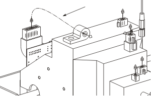

Heal a path
-
Inside the harness assembly, use the Heal Path command to route a path from the 16–pin connector to the wire clamp as shown below, using a start Extension length of 10 and an end Extension length of 5. Make sure that under Settings, Generate is set to Splines and that the Lock to Selected Object check box is selected.
Note
Note which direction the heal path spline enters the clamp. The arrow should point towards the 16–pin connector. If you need to reverse this direction, either double-click the arrow that appears on the clamp, or click Reverse Direction
 .
.
